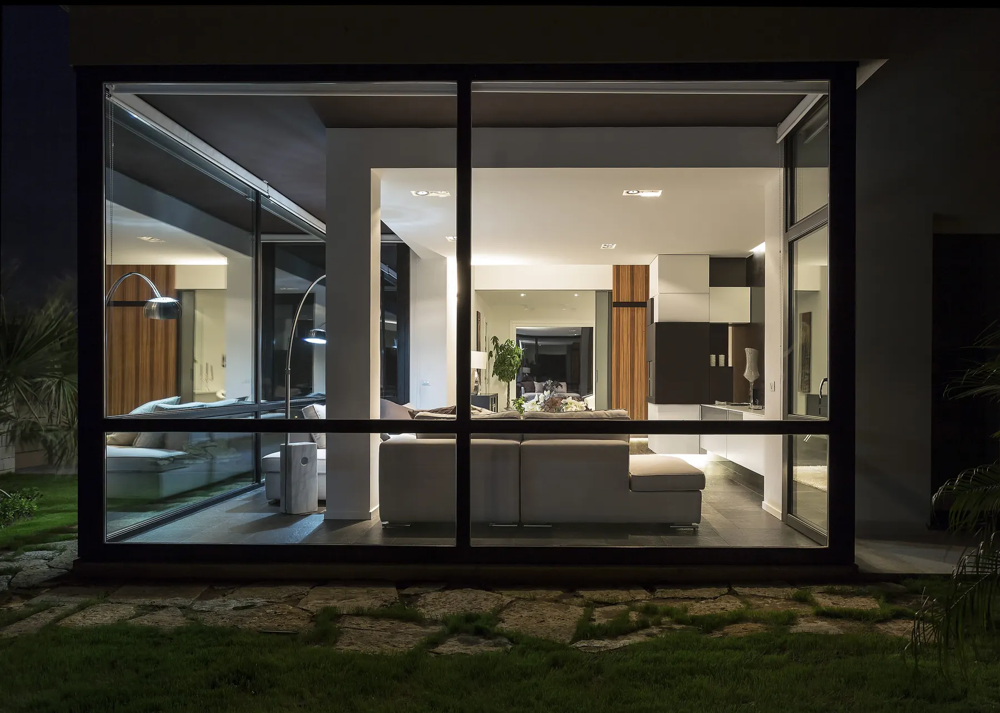

Domotica Alberghiera: Gestione Accessi e Clima per Strutture Non Presidiate

In Breve
- 👉 La domotica non è un gadget: è controllo costi, sicurezza e reputazione per hotel non presidiati.
- 👉 Serve un’architettura impianti ridondante: una rete instabile equivale a camere invendute.
- 👉 Accessi e clima vanno progettati insieme al layout, non “aggiunti dopo”.
Un hotel non presidiato 24/7 senza un sistema domotico serio è un rischio operativo: check‑in bloccati, consumi fuori controllo e recensioni che crollano in una settimana. In un mercato stagionale come Taormina, perdere anche solo 10 notti in alta stagione significa un impatto diretto sul cash‑flow. Qui la tecnologia è un asset strategico, non un optional. La domanda vera è: quanto costa non controllare accessi e clima? Il nostro lavoro è mettere ordine con un progetto tecnico che integra hardware, software, privacy e manutenzione, trasformando la domotica in una leva di efficienza e non in un costo opaco.
1. Architettura impiantistica e rete: la base che nessuno vede
La prima regola è semplice: se la rete cade, l’hotel si ferma. Per strutture non presidiate serve un’infrastruttura ridondante e protetta, con logica da data‑center, non da appartamento. Nel progetto definiamo standard minimi e verifiche reali prima di mettere a budget le camere. I punti tecnici irrinunciabili sono:
- cablaggio strutturato con dorsali separate per domotica e Wi‑Fi ospiti;
- UPS dedicati ai nodi critici (serrature, server, gateway);
- segmentazione di rete (VLAN) per evitare blocchi totali;
- monitoraggio remoto con alert su guasti e cali di prestazione.
Questa base non si improvvisa a cantiere finito. Se il layout architettonico non prevede vani tecnici, passerelle e accessi per manutenzione, il costo di gestione raddoppia nei primi due anni.
2. Gestione accessi: sicurezza, tracciabilità e turnover rapido
La gestione accessi è il cuore del modello “non presidiato”. Serrature elettroniche, QR o PIN temporanei devono funzionare senza attriti e con tracciabilità. Qui entrano in gioco sia l’esperienza cliente sia le responsabilità legali. La configurazione corretta include:
- chiavi digitali con scadenza automatica e log consultabili;
- integrazione con PMS per sincronizzare check‑in e check‑out;
- procedure di emergenza (chiave fisica protetta, override locale);
- gestione GDPR con informativa e conservazione dati coerente.
Un sistema ben progettato riduce il personale front‑desk e accelera i turnover, ma solo se è stabile e supportato da un protocollo operativo chiaro.
3. Clima e consumi: dal comfort al margine operativo
Il clima è la voce energetica più pesante. Con occupazione variabile, l’obiettivo non è solo il comfort, ma la riduzione di sprechi. Un BMS semplice ma integrato permette set‑point realistici (tipicamente 22‑24°C in estate, 20‑21°C in inverno) e scenari automatici legati a presenza e apertura finestre. Le scelte da fare in fase progettuale sono:
- sensori di presenza per attivazione e riduzione automatica;
- contatti finestra per bloccare il fan‑coil con finestra aperta;
- programmi di pre‑raffrescamento prima degli arrivi;
- report mensili per verificare i risparmi rispetto al budget.
Il risultato è misurabile: un hotel che controlla il clima correttamente riduce consumi e allunga la vita degli impianti, migliorando il margine operativo lordo.
4. Manutenzione, SLA e gestione a distanza
La tecnologia senza manutenzione è un costo nascosto. Un investitore serio pretende SLA e assistenza programmata, altrimenti i guasti si trasformano in recensioni negative. Qui il progetto si completa con un piano operativo:
- contratto di manutenzione con tempi di intervento garantiti;
- monitoraggio remoto con ticket automatici;
- magazzino di ricambi critici in struttura;
- procedure per reset o ripristino rapido anche da remoto.
Quando la tecnologia è governata, l’hotel funziona senza presidi continui e il rischio reputazionale si abbassa drasticamente.
5. Collaudo, formazione e continuità operativa
La differenza tra un impianto “installato” e un impianto “funzionante” è il collaudo operativo. In una struttura non presidiata il sistema deve essere testato come se fosse già in esercizio, con scenari reali e carichi simulati. Le attività operative che inseriamo nel piano sono:
- test di failover rete e alimentazione con simulazione blackout;
- prove di accesso simultaneo per picchi di check‑in;
- taratura dei set‑point climatici con monitoraggio dei consumi;
- formazione staff su procedure di emergenza e reset rapidi.
Un collaudo serio riduce i ticket di assistenza nei primi mesi e stabilizza l’esperienza cliente. In un hotel a gestione remota, questo è il confine tra efficienza e caos.